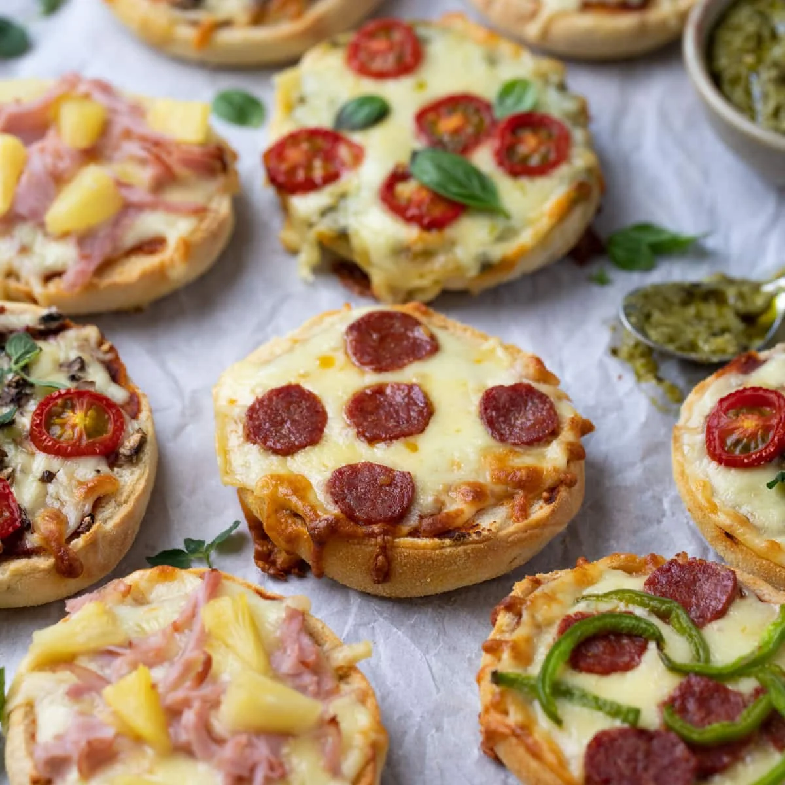
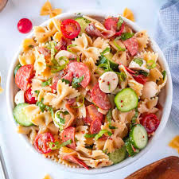

Easy Pizza Muffins
I made these this morning with pepperoni and pepper jack cheese. They were great! I'll make them again.
Peanut Butter & Jelly Panini

I didn't expect this to be so incredible! Both the peanut butter and jelly change composition entirely —you need to try it to see how good it is.
Bow Tie Pepperoni Pasta Salad
What a great salad ! It comes together quickly with minimum ingredients — but what a taste! I had to keep everyone out of the bowl so we could have some for supper. This is equally good warm or cold, and is definitely a keeper.